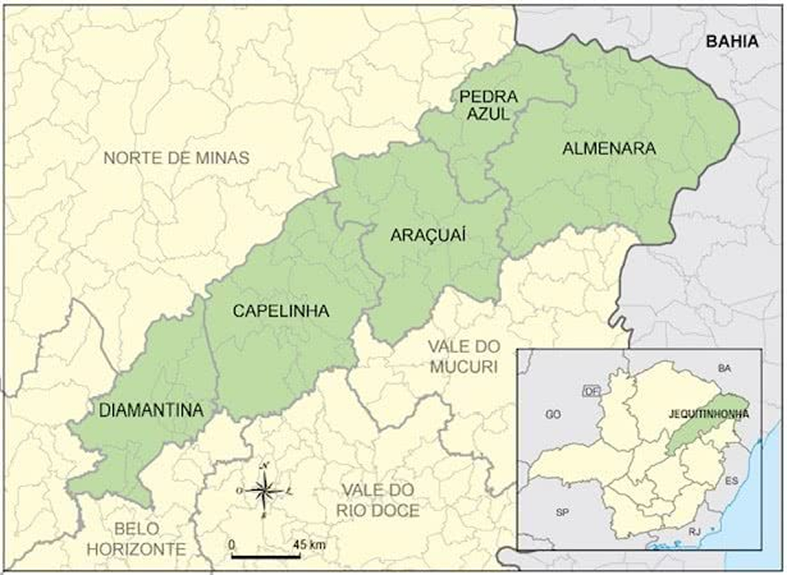
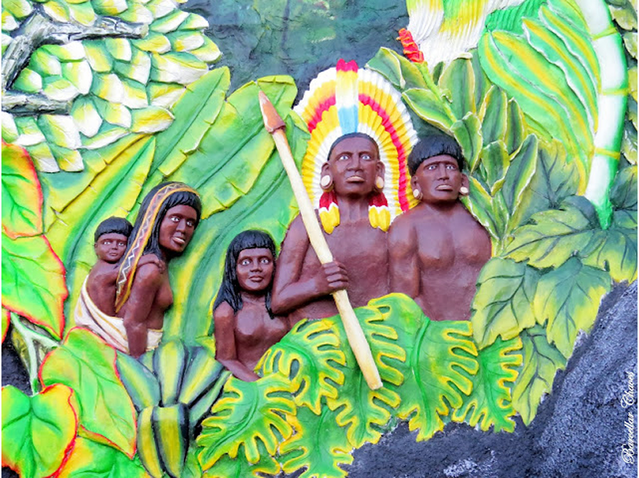

Joaíma é uma cidade localizada no Vale do Jequitinhonha
Fundada em 27 de dezembro de 1943, a cidade que faz parte da microrregião de Almenara, na mesorregião do Jequitinhonha, Joaíma tem um total de 1665,76 km², divididos entre o distrito-sede e o distrito de Giru, sendo um município da região de influência Almenara, fazendo divisa com os municípios de Jequitinhonha, Felisburgo, Santa Helena de Minas, Fronteira dos Vales, Águas Formosas, Monte Formoso e Novo Oriente de Minas, sendo os nascentes na cidade chamados de joaimense.
Os primitivos habitantes foram índios botocudos, chefiados pelo cacique Joahima. Com a colonização, vieram os portugueses, sob o primeiro comando do Alferes Julião Fernandes Leão. Em 1892, chegou ao pequeno povoado Cypriano de Souza, acompanhado de numerosa família, vindo de Santa Rita (depois Medina); esse novo morador deu incremento à vida do lugar, iniciando amplas plantações e construindo, sob a orientação do Padre Emereciano Alves de Oliveira, a primeira Capela, onde, a 6 de agosto de 1900, foi celebrada a primeira festa do Senhor do Bonfim, padroeiro do lugar.
Por essa época, chegou ao povoado o gaúcho Manoel Luiz, chefiando cerca de duas centenas de brancos e índios, que se atiraram aos trabalhos da lavoura e se radicaram na foz do Ribeirão Anta Podre, consolidando de vez o arraial.
Joaíma nasceu da vontade do governo português de ocupar e proteger as suas posses no imenso vazio que era o Nordeste de Minas. No início do século passado, as cortes de Lisboa resolveram que era necessária uma vigilância maior naquela região da Província de Minas, pois as terras diamantíferas, a grande riqueza local, estavam sendo cobiçadas por aventureiros e caçadores de riquezas fáceis.
O Alferes Julião Fernandes Leão se instalou à margem direita do Rio Jequitinhonha, em 1811, e sua primeira tarefa foi levar a sua fé cristã às inúmeras tribos de índios que habitavam aquelas paragens. Com isso, a catequese dos gentios foi intensificada em toda a região. O comandante procurou agrupar as várias tribos espalhadas, tentando aldeá-las às margens do Rio Jequitinhonha e de seus afluentes.
O topônimo é o de um chefe indígena, da tribo dos botocudos, o 'tucháua' Joahima. Entretanto, o primeiro nome foi 'Quartel' ou 'Quartel de Água Branca', nome do córrego às margens do qual foi instalado um Quartel da 7ª Divisão Militar de São Miguel. Com o crescimento da aldeia, foi necessário criar mais um Quartel e o lugar passou a denominar-se 'Quartéis do Bonfim', em homenagem ao Padroeiro do lugar, Nosso Senhor do Bonfim.